DM適性選手一覧
サカつく2026でDM適性を持つ選手56人を掲載。最大総合力、ポリシー、プレイスタイル、メイン・適性ポジション、入手可否などを比較できます。
DM適性の選手データ
該当選手数
56
メイン＋適性で判定
関連フォメコン
20
条件にDMを含む
最高最大総合力
15,682
該当選手内
最大総合力ランキング TOP10
国籍・プレイスタイル・ポリシー・入手可否で絞り込むと、条件内のTOP10へ自動更新します。
56人表示
1
ブルーノ・ギマランイス
15,682最大総合力
2

鎌田大地〔2026〕
15,564最大総合力
3

スコット・マクトミネイ
15,563最大総合力
4

フェデリコ・バルベルデ
15,533最大総合力
5

ルカ・モドリッチ
15,481最大総合力
6
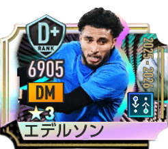
エデルソン〔2025-2026〕
15,433最大総合力
7

ガビ
15,426最大総合力
8

ニコロー・バレッラ
15,423最大総合力
9

オーレリアン・チュアメニ
15,394最大総合力
10

佐野海舟〔2026〕
15,393最大総合力
11

エドゥアルド・カマヴィンガ
15,353最大総合力
12

ケヴィン・デ・ブライネ
15,321最大総合力
13

クリスティアン・ロルダン〔2026〕
15,253最大総合力
14

中村憲剛［J12025GOAL!DEN］
15,169最大総合力
15

東慶悟［J12025歴戦の猛者］
14,943最大総合力
16

ファビアン・ルイス
14,907最大総合力
17
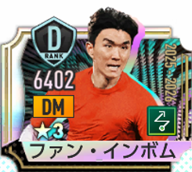
ファン・インボム
14,843最大総合力
18
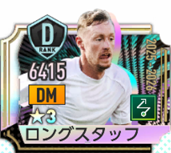
ショーン・ロングスタッフ
14,786最大総合力
19
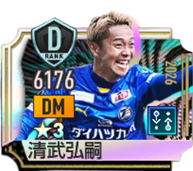
清武弘嗣(2026)
14,690最大総合力
20
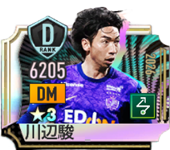
川辺駿(2026)
14,684最大総合力
21
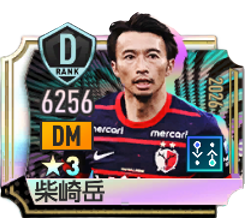
柴崎岳(2026)
14,651最大総合力
22
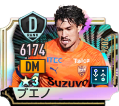
マテウス・ブエノ(2026)
14,632最大総合力
23

河原創(2026)
14,625最大総合力
24

山口蛍(2026)
14,625最大総合力
25

山本悠樹(2026)
14,536最大総合力
26

橋本拳人
14,520最大総合力
27

喜田拓也
14,519最大総合力
28

山根陸(2026)
14,509最大総合力
29
田中聡［J12025BEST11］
14,490最大総合力
30
稲垣祥［J12025BEST11］
14,453最大総合力
31

稲垣祥
14,416最大総合力
32

ソ・ミヌ
14,400最大総合力
33

西谷優希(2026)
14,389最大総合力
34

キム・ドンヒョン
14,358最大総合力
35

山口大輝(2026)
14,356最大総合力
36
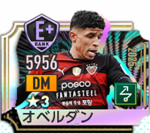
オベルダン
14,338最大総合力
37

上村周平
14,284最大総合力
38

松岡大起
14,265最大総合力
39
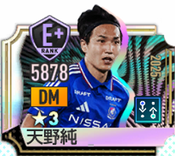
天野純
14,264最大総合力
40
キム・ジンギュ［K12025BEST11］
14,252最大総合力
41
パク・ジンソプ［K12025BEST11］
14,251最大総合力
42
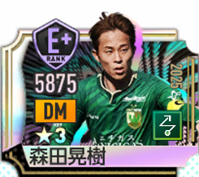
森田晃樹
14,247最大総合力
43

ユーリ・ララ
14,244最大総合力
44

西村恭史(2026)
14,217最大総合力
45

田中駿汰
14,136最大総合力
46

メン・ソンウン
14,132最大総合力
47
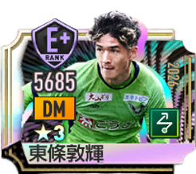
東條敦輝(2026)
14,092最大総合力
48
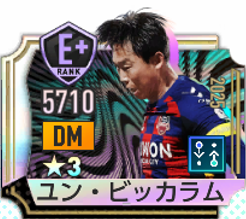
ユン・ビッカラム
14,074最大総合力
49
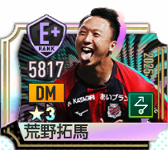
荒野拓馬
14,070最大総合力
50
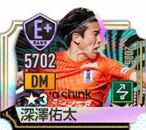
深澤佑太
13,965最大総合力
51

マルテン・デ・ローン
12,416最大総合力
52
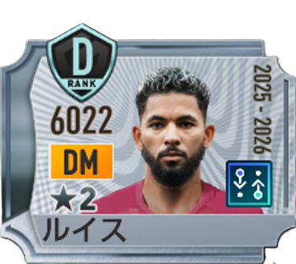
ドウグラス・ルイス
12,189最大総合力
53

デイヴィ・クラーセン
11,933最大総合力
54

キム・ナミル
11,410最大総合力
55

透明男
11,005最大総合力
56
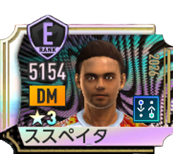
ススペイタ
10,978最大総合力
ポリシー別人数

カウンター
11人

リアクション
18人

ポゼッション
12人

ムービング
15人
プレイスタイル別人数

セントラルMF
20人

ハードマーカー
18人

パサー
18人
DM適性を持つ全選手
メインポジションだけでなく、適性ポジションにDMを含む選手も対象です。国籍・ポリシー・プレイスタイル・入手可否で絞り込めます。
56人表示
DMを発動条件に含むフォーメーションコンボ
金金ランク
ゴーデンゾーネン'95
C026
CB / ストッパー LvⅡ以上
DM / ハードマーカー LvⅡ以上
DM / セントラルMF LvⅢ以上
DM / ハードマーカー LvⅡ以上
DM / セントラルMF LvⅢ以上
ディアボロ・ディ・ミラノ'99
C031
CB / 組立CB LvⅡ以上
DM / セントラルMF LvⅢ以上
LW / ドリブラー LvⅡ以上
DM / セントラルMF LvⅢ以上
LW / ドリブラー LvⅡ以上
ラ・ロハ'24
C032
RB / 攻撃的FB LvⅡ以上
DM / パサー LvⅡ以上
RW / ドリブラー LvⅢ以上
DM / パサー LvⅡ以上
RW / ドリブラー LvⅢ以上
カナリア軍団'06
C045
CB / ストッパー LvⅡ以上
DM / ハードマーカー LvⅢ以上
CF / ストライカー LvⅡ以上
DM / ハードマーカー LvⅢ以上
CF / ストライカー LvⅡ以上
エンカルナードス'23
C046
CB / 組立CB LvⅡ以上
DM / セントラルMF LvⅡ以上
AM / アタッカー LvⅢ以上
DM / セントラルMF LvⅡ以上
AM / アタッカー LvⅢ以上
リーベル'18
C047
DM / ハードマーカー LvⅡ以上
LW / ドリブラー LvⅢ以上
RW / ドリブラー LvⅡ以上
LW / ドリブラー LvⅢ以上
RW / ドリブラー LvⅡ以上
ロス・カフェテロス'94
C048
CB / ストッパー LvⅡ以上
DM / セントラルMF LvⅢ以上
CF / ストライカー LvⅡ以上
DM / セントラルMF LvⅢ以上
CF / ストライカー LvⅡ以上
ネラッズーロ'10
C053
DM / セントラルMF LvⅡ以上
LW / サイドアタッカー LvⅡ以上
RW / ワイドストライカー LvⅢ以上
LW / サイドアタッカー LvⅡ以上
RW / ワイドストライカー LvⅢ以上
ブルー・インパクト'26
C057
DM / パサー LvⅡ以上
LM / ドリブラー LvⅢ以上
RM / ドリブラー LvⅡ以上
LM / ドリブラー LvⅢ以上
RM / ドリブラー LvⅡ以上
セレソン'70
C058
CB / スプリントCB LvⅡ以上
DM / ハードマーカー LvⅡ以上
LW / サイドアタッカー LvⅢ以上
CF / ラインブレーカー LvⅢ以上
DM / ハードマーカー LvⅡ以上
LW / サイドアタッカー LvⅢ以上
CF / ラインブレーカー LvⅢ以上
銀銀ランク
ダニッシュ・ダイナマイト'86
C014
DM / ハードマーカー LvⅡ以上
CF / ラインブレーカー LvⅡ以上
CF / ラインブレーカー LvⅡ以上
レ・ルージュ・エ・ブラン'04
C021
GK / オーソドックスGK LvⅡ以上
DM / パサー LvⅡ以上
LW / サイドアタッカー LvⅡ以上
DM / パサー LvⅡ以上
LW / サイドアタッカー LvⅡ以上
クロチャーティ'99
C024
DM / セントラルMF LvⅡ以上
AM / アタッカー LvⅡ以上
CF / ストライカー LvⅡ以上
AM / アタッカー LvⅡ以上
CF / ストライカー LvⅡ以上
アズーリ’14
C037
GK / オーソドックスGK LvⅡ以上
DM / セントラルMF LvⅡ以上
AM / アタッカー LvⅡ以上
DM / セントラルMF LvⅡ以上
AM / アタッカー LvⅡ以上
ヒノマルスタイル'93
C038
LB / 守備的FB LvⅡ以上
DM / セントラルMF LvⅡ以上
RW / ドリブラー LvⅡ以上
DM / セントラルMF LvⅡ以上
RW / ドリブラー LvⅡ以上
ブルー・ガル’22
C039
CB / ストッパー LvⅡ以上
CB / 組立CB LvⅡ以上
DM / セントラルMF LvⅡ以上
CB / 組立CB LvⅡ以上
DM / セントラルMF LvⅡ以上
オルロヴィ'24
C044
GK / オーソドックスGK LvⅡ以上
DM / セントラルMF LvⅡ以上
CF / ストライカー LvⅡ以上
DM / セントラルMF LvⅡ以上
CF / ストライカー LvⅡ以上
ディー・アドラー'24
C050
CB / ストッパー LvⅡ以上
DM / パサー LvⅡ以上
CF / ラインブレーカー LvⅡ以上
DM / パサー LvⅡ以上
CF / ラインブレーカー LvⅡ以上
関連ツール
最終データ更新日：